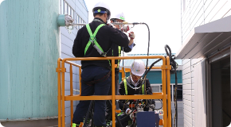
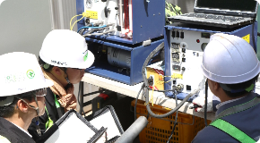

대기오염물질 배출시설 자가측정

자가측정 업무
크린에어테크는 사업자의 배출시설 및 방지시설에 대한 자가측정 업무를 대행하고 있습니다.
사업자는 배출시설을 운영할 때에는 나오는 오염물질을 자가측정하거나 「환경분야 시험·검사 등에 관한 법률」 제16조에 따른 측정대행 업자에게 측정하게 하여 그 결과를 사실대로 기록하고, 환경부령으로 정하는 바에 따라 보존하여야 합니다. 측정한 결과는 환경부령으로 정하는 바에 따라 환경부장관 또는 시ㆍ도지사에게 제출하여야 합니다. [관련법령 : 대기환경보전법 제39조]
- 
- 
자가측정의 대상 및 항목
| 구분 | 배출구별 규모 | 관제센터로 측정결과를 자동전송하지 않는 사업장의 배출구 | 관제센터로 측정결과를 자동전송하지만 굴뚝 자동측정기가 미설치된 배출구 |
|
|---|---|---|---|---|
| 후단만 측정하는 경우 | 전·후단을 같이 측정하는 경우 | |||
| 제1종 배출구 | 먼지·황산화물 및 질소산화물의 연간 발생량 합계가 80톤 이상인 배출구 | 매주 1회 이상 | 2주마다 1회 이상 | 매월 1회 이상 |
| 제2종 배출구 | 먼지·황산화물 및 질소산화물의 연간 발생량 합계가 20톤 이상 80톤 미만인 배출구 | 매월 2회 이상 | 매월 1회 이상 | 2개월마다 1회 이상 |
| 제3종 배출구 | 먼지·황산화물 및 질소산화물의 연간 발생량 합계가 2톤 이상 10톤 미만인 배출구 | 2개월마다 1회 이상 | 2개월마다 1회 이상 | 분기마다 1회 이상 |
| 제4종 배출구 | 먼지·황산화물 및 질소산화물의 연간 발생량 합계가 2톤 이상 10톤 미만인 배출구 | 반기마다 1회 이상 | 반기마다 1회 이상 | 반기마다 1회 이상 |
| 제5종 배출구 | 먼지·황산화물 및 질소산화물의 연간 발생량 합계가 2톤 미만인 배출구 | 반기마다 1회 이상 | 반기마다 1회 이상 | 반기마다 1회 이상 |
※ 측정항목 : 별표 8에 따른 배출허용기준이 적용되는 대기오염물질. 다만, 비산먼지는 제외한다.
※ 제3종부터 제5종까지의 배출구에서 기준 이상의 특정대기유해물질이 배출되는 경우에는 위 표에도 불구하고 매월 2회이상 측정한다.
배출허용기준(별표8)다운로드